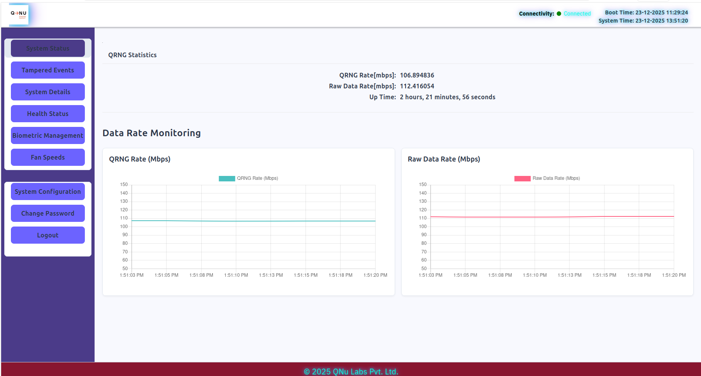
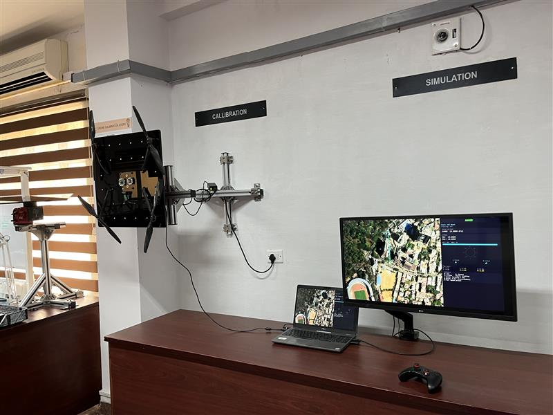
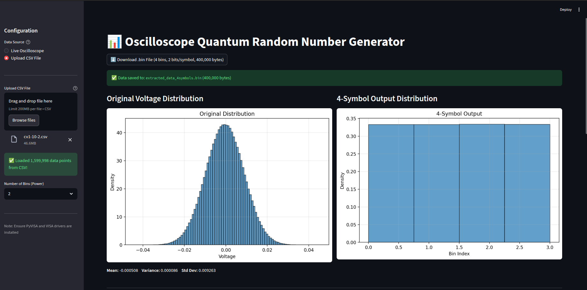
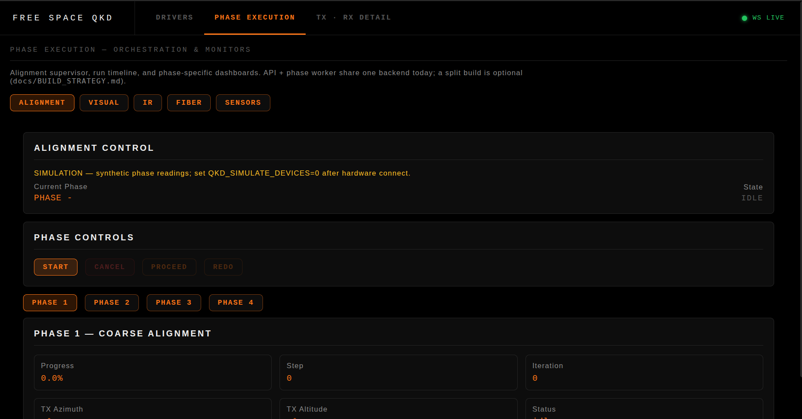
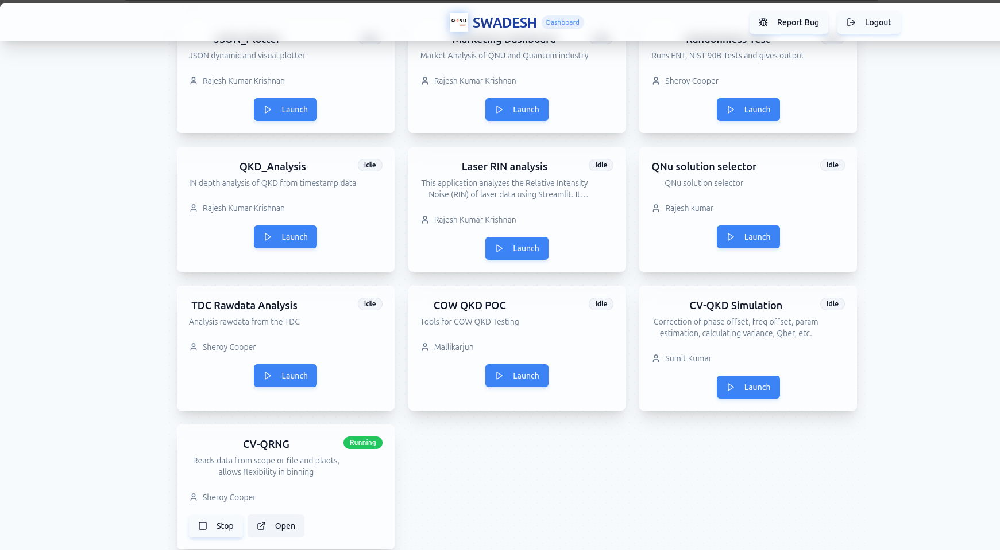
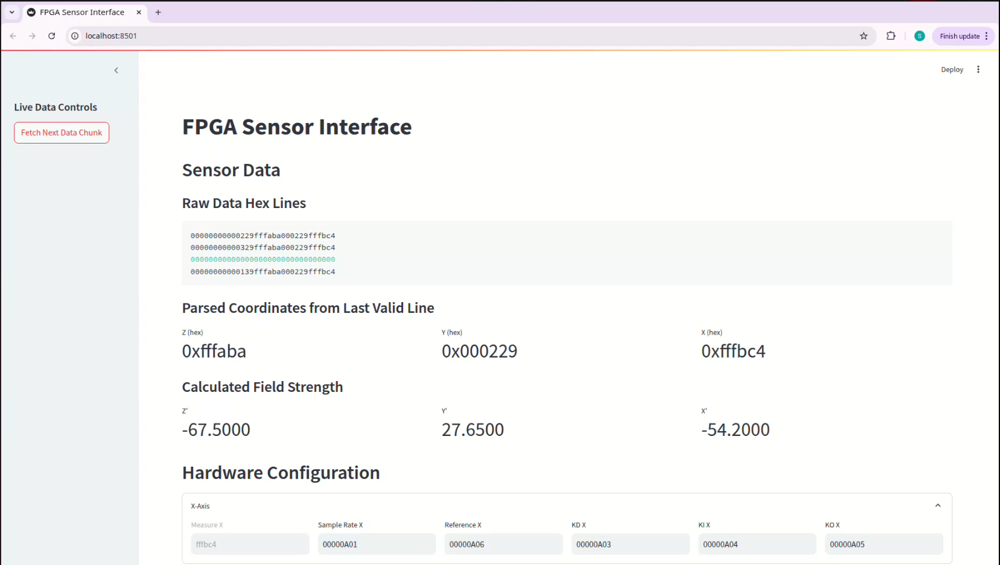
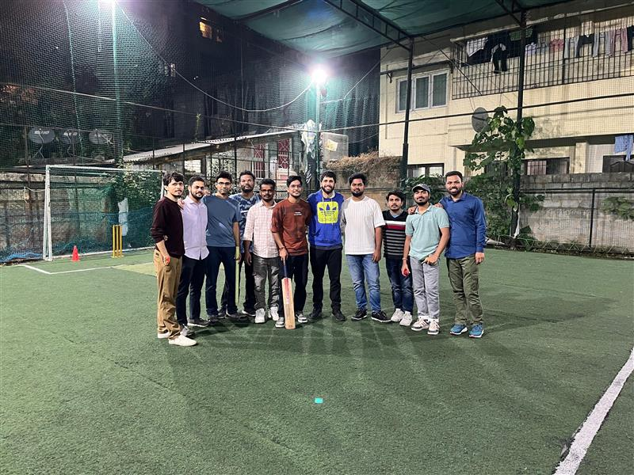
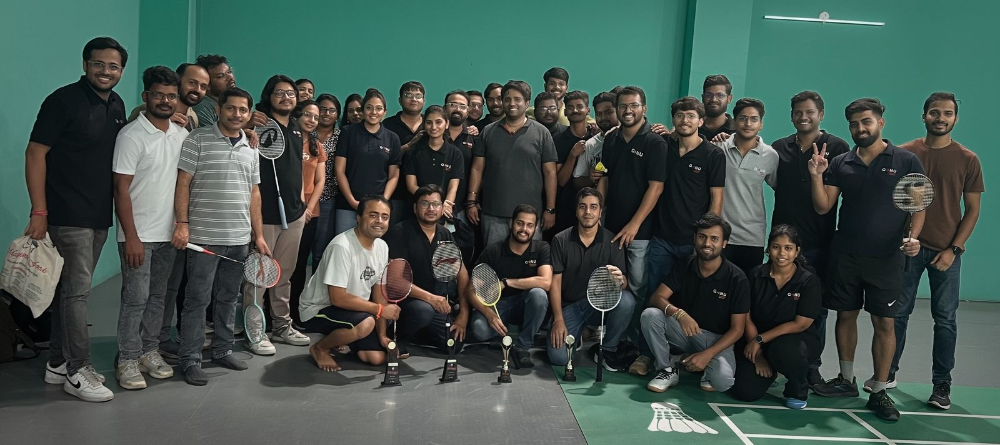

I contribute across TROPOS 2.0, SAG VALIDATION, the drone
software stack, CVQRNG and FREESPACE QKD (stack, GUI, and alignment
tooling), plus supporting threads in CVQKD and magnetometry. The sections below follow that priority order,
with screenshots and highlights for each initiative.
Quantum communications · sensing · autonomyMay 2025 — May 2026
Projects
01 — TROPOS 2.0
Tropospheric / platform programme — GUI and system-side tooling.
Worked on GUI modules and system-side improvements to make TROPOS data easier to monitor and debug during
testing. Contributed to fixing issues related to system visibility and stability. Helped improve usability
during internal demos and testing cycles.

GUI & system: Modules and improvements for monitoring and debugging during tests.
Stability: Contributions to visibility and stability-related fixes.
Usability: Clearer experience for internal demos and test cycles.
Supported SAG validation through testing, data observation, and debugging across different scenarios. Assisted
in identifying inconsistencies and verifying system outputs against expected behavior. Contributions helped in
improving confidence during validation and testing phases.
Testing & observation: Hands-on support across scenarios, data checks, and debugging.
Consistency: Helped spot inconsistencies and compare outputs to expected behavior.
Confidence: Stronger sign-off posture during validation and test phases.
On the drone stack I focused on unblockers and operator-facing integration: fixing a stuck authentication
path, improving latency on the flows I influenced, and staying close to testing. I also built a practical
rehearsal setup: gimbal motion from an Xbox controller together with vehicle motion on a 2D map in the
simulator for demos and training. That setup made rehearsals and structured test runs easier to run
end-to-end.

Auth: Unblocked a major authentication issue so the stack could progress again.
Latency: Contributed to measurable latency improvements on the flows exercised in our test plan.
Testing: Strong involvement in test cycles, defect isolation, and sign-off support.
Simulator: Gimbal + Xbox controller + drone motion on a 2D map for rehearsal and demos.
04 — CVQRNG
Continuous-variable quantum random number generation — stack & GUI
Worked on CVQRNG stack and GUI to make the system easier to operate and monitor in real time. Contributed to
randomness validation workflows using NIST tests and handled large datasets. Improved system usability for
testing and demo purposes.

Stack & GUI: Real-time operation and monitoring for lab and demo use.
Validation: NIST-based randomness checks and large-dataset handling.
Usability: Smoother workflows for testing and demonstrations.
05 — FREESPACE QKD
Optical link · Xbox gimbal for alignment · stack & GUI
Contributed to freespace QKD stack and GUI development with focus on alignment and operability. Built
Xbox-based gimbal control to simplify optical alignment during testing. Helped improve practical usability of
the system in lab/demo setups.

Stack & GUI: Alignment and operability for lab and demo contexts.
Gimbal (Xbox): Controller-driven alignment to speed up optical setup during tests.
Outcome: More practical day-to-day use of the terminal in the lab.
Other technical threads
Supporting work — still important to capture for a full picture.
06 — CVQKD
Continuous-variable quantum key distribution
Worked on CV-QKD system understanding, including signal processing and basic architecture. Contributed to
visualization (FFT, QPSK) and initial integration efforts. Gained hands-on experience connecting theory with
system-level implementation.

Understanding: Signal path, processing, and high-level architecture.
Visualization: FFT and QPSK views to support analysis and integration.
Bridge: Linking concepts to runnable system pieces.
07 — Magnetometer
Magnetic sensing / calibration / fusion
Worked on magnetometer data visualization and basic analysis through GUI tools. Helped in observing sensor
behavior and improving data readability. Supported testing and validation through plots and real-time
monitoring.

GUI & plots: Clearer views of sensor data for quick interpretation.
Observation: Easier read on behavior during experiments.
Testing: Real-time monitoring to back validation runs.
08 — SPARQ
Ideas · direction · mentoring around simulators and quantum applications
Contributed ideas and helped define directions for topics within SPARQ. Supported others through discussions
and basic mentoring. Helped in shaping practical approaches around simulators and quantum system applications.
Direction: Ideas and topic framing inside SPARQ.
Mentoring: Discussions and light guidance for teammates.
Practical focus: Simulators and how quantum systems show up in real tooling.
Future ideas (to pitch)
More simulators: Reuse the drone / map pattern on other subsystems.
QCCTV: Quantum-secured or quantum-aware monitoring concept.
AI/ML on QRNG & QKD: Health monitoring, anomaly detection — with clear trust boundaries.
IoT security: Keys from QRNG/QKD for device identity and sessions.
Skills & direction
⟨ superposition of craft & curiosity ⟩
What I bring today — and where I am steering next. Hover or focus tiles for a 3D tilt.
Current strengths
Future focus
Growing more toward:
Beyond work
How I connect with colleagues outside day-to-day delivery.
A few snapshots — sport, shared meals, and team moments — that show balance and collaboration beyond the
lab screen.
Chess
Strategy and calm focus; friendly games with teammates.

Cricket
Weekend outdoor play — energy and team spirit.

Badminton
Courts with the wider group; quick rallies, good laughs.
Team snacks
Light breaks between focused work blocks.
Team dinner
Team Party.
Software team
The faces behind builds, tests, and releases.
Activities (cross-project)
Build
TROPOS 2.0 GUI and system-side modules; SAG validation support; drone auth and latency; CVQRNG and
Freespace QKD stack/GUI.
Test
Hands-on testing and clear feedback across SAG, drone, and quantum stacks.
I deliver across TROPOS 2.0, SAG VALIDATION, and the drone
stack (auth, latency, testing, simulator), while owning CVQRNG and Freespace QKD
stack/GUI and Xbox gimbal alignment — I mentor in SPARQ and am lining up ideas on more
simulators, QCCTV, AI/ML on quantum links, and IoT hardening.